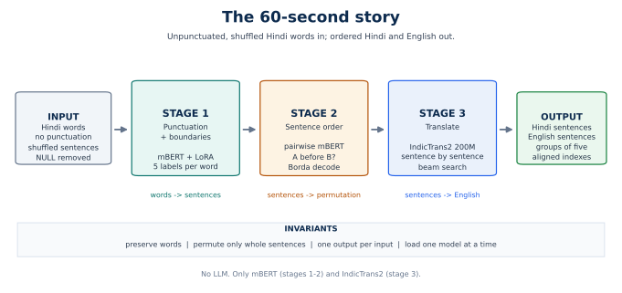
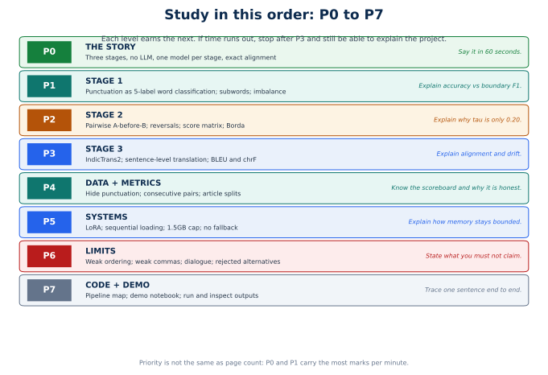
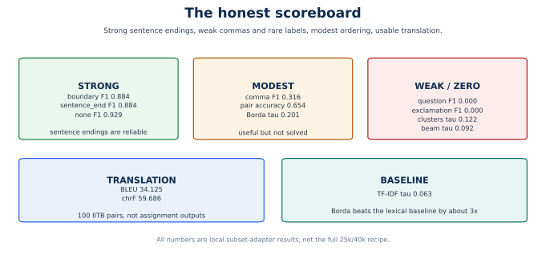
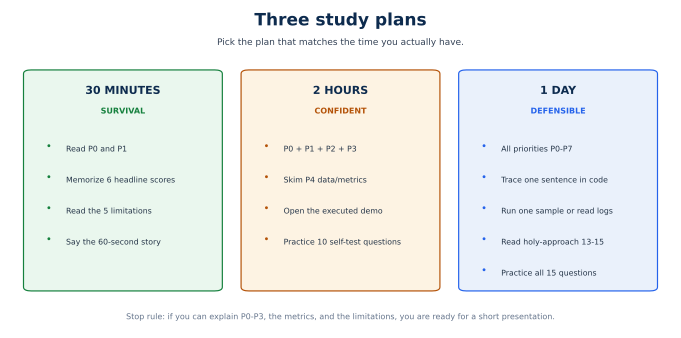
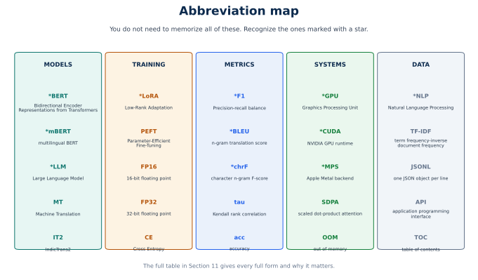

The short, ordered path through the Hindi punctuation → sentence ordering → translation project.
Start with the story. Add one stage at a time. Stop when you can explain the pipeline, defend its weak scores, and name what you must not claim.
This is the map, not the manual. Read it first. It tells you what to learn, in what order, what to skip, and how to stop studying when you know enough.
The project has two long PDFs:
| Document | Job | When to read it |
|---|---|---|
assblasternlp.pdf |
Beginner study guide | First, to learn the project from scratch |
holy-approach.pdf |
Detailed design dossier | Later, for depth, viva, or design defence |
| this guide | Priority map | Before both, and again before the form/presentation |
Three rules:
The 30-second version. A no-LLM, three-stage Hindi pipeline. mBERT+LoRA restores punctuation and sentence boundaries. A pairwise mBERT classifier plus Borda decoding orders sentences. IndicTrans2 translates each ordered sentence. Models load one at a time to respect the 1.5GB CUDA budget. Sentence alignment is preserved end to end.

NULL placeholders.| Fact | Why it matters |
|---|---|
| Three stages, not one model | No aligned triplets exist; each stage can be evaluated and replaced. |
| No LLM | Only mBERT and IndicTrans2 are used. This is a hard assignment constraint. |
| Stage 1 is token classification | It assigns labels to existing words; it cannot rewrite or invent words. |
| Stage 2 is pairwise classification | It answers "does A come before B?" then composes a global order. |
| Stage 3 is sentence-level MT | One Hindi sentence in, one English sentence out, order preserved. |
| Data is self-supervised from Wikipedia | Remove punctuation to create labels; consecutive sentences create before/after pairs. |
| Models load sequentially | Peak memory is one model, not three; LoRA keeps adapters small. |
| Ordering is the weakest stage | Pair accuracy is 0.654, but full-order Kendall tau is only 0.201. |
Pass condition. You can say the five sentences above, in order, without looking at this page.

| Priority | Topic | Learn this | Pass condition |
|---|---|---|---|
| P0 | The story | Three stages, no LLM, model per stage, alignment, memory | 60-second explanation |
| P1 | Stage 1 | 5 labels, subwords, imbalance, boundary F1, windows | Explain accuracy vs boundary F1 |
| P2 | Stage 2 | Pairwise A-before-B, reversals, score matrix, Borda | Explain why tau is only 0.20 |
| P3 | Stage 3 | IndicTrans2, sentence-level translation, BLEU/chrF | Explain alignment and drift |
| P4 | Data + metrics | Hiding punctuation, pairs, article splits, scoreboard | Know which scores to quote |
| P5 | Systems | LoRA, sequential loading, 1.5GB cap, no fallback | Explain how memory stays bounded |
| P6 | Limits | Weak ordering, weak commas, dialogue, rejected alternatives | State what not to claim |
| P7 | Code + demo | Pipeline map, notebooks, commands, outputs | Trace one sentence end to end |
| Time available | Stop after | You can still |
|---|---|---|
| 30 minutes | P1 | Give a short presentation and name the main weakness |
| 2 hours | P4 | Answer most technical questions and quote the scoreboard |
| 1 day | P7 | Defend design choices, alternatives, and limitations |
Do not start with P7. Reading code before the story makes the project look like unrelated files. Learn P0-P3 first.
One-line version. Punctuation is five-class word labelling: mBERT+LoRA decides whether each word is followed by nothing, a comma, a danda, a question mark, or an exclamation mark.
| Id | Label | Mark |
|---|---|---|
| 0 | none |
nothing |
| 1 | comma |
, |
| 2 | sentence_end |
। |
| 3 | question |
? |
| 4 | exclamation |
! |
The model never generates text. It predicts a label for each existing word; the mark is appended afterwards. This is why Stage 1 cannot lose or rewrite a word.
mBERT uses WordPiece. One Hindi word may become several subwords. The word's label is placed on the first subword; continuation subwords and special tokens get -100, which the loss ignores.
Why: exactly one supervision signal per word, simple and stable.
none is 90.947% of labels. A model that predicts none everywhere already scores about 91% accuracy. The loss uses capped inverse-frequency weights:
The cap prevents rare classes from destabilising training.
Inference uses 64-word windows with stride 40. A word can appear in several windows. Predictions near a window centre get more weight than predictions near an edge.
Why: every word gets enough context, and unreliable edge predictions are down-weighted.
| Metric | Value | Meaning |
|---|---|---|
| Word accuracy | 0.8724 | Misleadingly high because of none |
| Boundary F1 | 0.8842 | The headline Stage 1 metric |
sentence_end F1 |
0.8838 | Danda restoration works well |
none F1 |
0.9285 | Easy majority class |
comma F1 |
0.3161 | Weak; commas are ambiguous and rare |
question F1 |
0.0000 | Only 236 training examples |
exclamation F1 |
0.0000 | Only 153 training examples |
Stage 1 is five-class word classification, not text generation. Only the first subword of each word is supervised, class weights handle the 91%
noneimbalance, and overlapping windows are merged with triangular weights. Boundary F1 is 0.884 and sentence-end F1 is 0.884, but comma F1 is 0.316 and question/exclamation are zero because the training data barely contains them.
Do not say "punctuation accuracy is 87%, so it is good." Accuracy is dominated by none; boundary F1 and per-class F1 are the honest metrics.
One-line version. Train a classifier to answer "does A come before B?", score every sentence pair, then use Borda to turn the pairwise matrix into one order.
Only consecutive sentences are used. Each natural pair creates two balanced examples:
(A, B) -> 1 correct order
(B, A) -> 0 reversed
Why reversals: they remove shortcuts such as "the first input is always earlier" or "the longer sentence is always earlier."
For n sentences, build M where:
Only unordered pairs are scored. The other triangle is the complement:
For 99 sentences that is 4,851 model calls, not 9,801.
For each sentence:
Sort by si descending. The sentence that is often predicted to come before others moves earlier.
| Metric | Value |
|---|---|
| Pair accuracy | 0.6543 |
| Macro F1 | 0.6534 |
| Borda mean Kendall tau | 0.2007 |
| Clusters tau | 0.1220 |
| Beam tau | 0.0921 |
| TF-IDF ablation tau | 0.0631 |
The key insight: 65% pair accuracy does not become 65% order accuracy. Local pair decisions can form cycles such as A ≺ B ≺ C ≺ A. Borda averages the conflict; it does not recover the truth.
| Decoder | How it works | Why it lost or won |
|---|---|---|
| Borda | Average all pairwise before-scores, sort | Won: robust to individual pair errors |
| Clusters | TF-IDF + KMeans, order cluster medoids, beam inside | Assumes topical neighbours are adjacent |
| Beam | Build a chain, keep top 8 partial orders | Locks in an early bad transition |
| TF-IDF | Greedy cosine-similarity chain | Measures topic, not discourse order |
Ordering is pairwise: a classifier answers whether A comes before B, trained on consecutive pairs and their reversals. The symmetric score matrix is decoded with a Borda-style mean score. Borda wins with Kendall tau 0.20, but that is weak: 65% pair accuracy does not compose into a good global order because local decisions can be inconsistent.
Do not say "the ordering model works well." It beats chance and the TF-IDF baseline, but it does not reconstruct documents reliably. Negative tau appears on some articles.
One-line version. Translate each ordered Hindi sentence into English with IndicTrans2-200M, sentence by sentence, preserving order and alignment.
| Setting | Value |
|---|---|
| Model | ai4bharat/indictrans2-indic-en-dist-200M |
| Source / target | hin_Deva / eng_Latn |
| Batch size | 4 |
| Beams | 4 |
| Max generation length | 256 |
| Preprocessing | IndicTransToolkit |
| CUDA precision | fp16 |
| MPS precision | fp32 |
Sentences are translated one at a time, not as a whole document. That gives exact one-to-one alignment:
Hindi sentence i -> English sentence i
The pipeline flattens all sentences from all files, translates them in batches, then slices the results back per file. Empty strings stay empty, so indexes never shift.
| Metric | Value | Meaning |
|---|---|---|
| BLEU | 34.125 | Useful but imperfect n-gram match |
| chrF | 59.686 | Character overlap; more forgiving |
| Examples | 100 | IITB English–Hindi, not assignment files |
The metrics are corpus-level on a benchmark, not a measure of the assignment output. There are no reference English translations for the assignment files.
Stage 3 is sentence-level IndicTrans2 with four beams. It preserves alignment exactly, but it loses cross-sentence context, so pronouns and discourse links can drift. BLEU 34.1 and chrF 59.7 on 100 IITB pairs show usable translation quality, not perfect meaning preservation.
Do not say "BLEU 34 measures the assignment output." It measures 100 benchmark pairs. The assignment output is inspected qualitatively.
| Signal | How it becomes supervision |
|---|---|
| Existing punctuation | Remove the mark from the last token; store it as a label |
| Existing sentence order | Consecutive sentences create positive pairs; reversals create negatives |
| Hindi Wikipedia prose | Enough articles for 25,000 windows and 40,000 pairs |
| Item | Value |
|---|---|
| Articles kept | 3,000 |
| Split | 2,700 / 150 / 150 |
| Punctuation train windows | 25,000 |
| Ordering train pairs | 40,000 |
| Ordering evaluation articles | 40 |
| Punctuation window | 64 words, stride 40, bounds 32–96 |
| Sentence filter | 5–40 words |
| Seed | 42 |
The split is article-level: no article appears in two splits. This prevents overlapping windows and sentence pairs from leaking document context.

| Group | Metric | Value |
|---|---|---|
| Punctuation | Boundary F1 | 0.8842 |
| Punctuation | sentence_end F1 |
0.8838 |
| Punctuation | comma F1 |
0.3161 |
| Punctuation | question / exclamation F1 |
0.0 |
| Ordering | Pair accuracy | 0.6543 |
| Ordering | Borda Kendall tau | 0.2007 |
| Ordering | TF-IDF tau baseline | 0.0631 |
| Translation | BLEU | 34.125 |
| Translation | chrF | 59.686 |
| If you report only | You hide |
|---|---|
| Punctuation accuracy | That none is 91% of labels |
| Pair accuracy | That full-order recovery is weak |
| BLEU | That meaning can drift despite fluency |
| One end-to-end score | Which stage failed |
scripts/verify_colab_run.py checks data counts, adapters, report fields, metric floors, output alignment, and notebook structure. The full local run passed 150/150 checks; the --skip-model-smoke path passed 142 checks.
Pass condition. You can quote boundary F1, comma F1, pair accuracy, Borda tau, BLEU, and chrF, and say "subset adapters" in the same breath.
The 1.5GB cap is handled by not holding models concurrently:
load punctuation -> process -> free
load ordering -> process -> free
load translation -> process -> free
On CUDA, limit_gpu_memory sets a process memory fraction:
torch.cuda.set_per_process_memory_fraction(1.5 / total_gb)
On MPS/CPU this is a no-op. Locally, each adapter stage used about 0.67GB on MPS, but the CUDA cap was not exercised. Do not claim a measured CUDA peak.
| Property | Punctuation adapter | Ordering adapter |
|---|---|---|
| Trainable parameters | 593,669 | 591,362 |
| Total parameters | 177,860,362 | 178,446,340 |
| Trainable share | 0.3338% | 0.3314% |
| Rank / alpha | 16 / 32 | 16 / 32 |
The backbone is frozen; only LoRA matrices and the classifier are trained. Adapters are small and easy to ship.
The memory cap is respected by sequential loading and LoRA, not by running all three models together. On CUDA the process fraction enforces 1.5GB; on MPS that cap is a no-op, so the local memory numbers are adapter evidence, not proof of the CUDA cap.
| Limitation | Evidence |
|---|---|
| Ordering is weak | Borda tau 0.2007; negative tau on some articles |
| Commas are weak | F1 0.3161 |
| Questions/exclamations unsupported | F1 0.0; only 236/153 examples |
| Dialogue is over-segmented | 507 words -> 80 sentences; 846 -> 99 |
| Translation drifts | BLEU 34; sample paraphrases change emphasis and number |
| Subset adapters | 4,000 examples each, not the full 25k/40k recipe |
| Alternative | Why rejected |
|---|---|
| One end-to-end model | No aligned triplets; opaque; budget risk |
| LLM prompting | Forbidden; non-deterministic; not a pipeline |
| Seq2seq punctuation | Could rewrite words; slower; harder alignment |
| Full fine-tuning | More memory; larger checkpoints |
| Listwise ordering | Needs fixed length; harder to train |
| Clusters or beam decoding | Measured worse than Borda |
| NLLB / mBART / OPUS-MT | Larger or weaker for this budget |
| Fallback translation model | Hides failures; doubles memory |
| Do not say | Say instead |
|---|---|
| "The pipeline reconstructs documents accurately." | "It improves order over a lexical baseline but does not fully recover it." |
| "It handles questions and exclamations." | "Those classes have zero F1 due to data scarcity." |
| "It was trained on the full recipe." | "The shipped adapters are 4k subsets; the full recipe is documented." |
| "The 1.5GB CUDA cap is verified." | "It is implemented; it was not exercised locally on CUDA." |
| "BLEU 34 measures the assignment output." | "It measures 100 IITB pairs." |
| Order | File | Why |
|---|---|---|
| 1 | notebooks/pipeline_demo.ipynb |
See inputs, outputs, and scores with no setup |
| 2 | src/pipeline.py |
The whole flow in one file |
| 3 | src/constants.py |
Models, labels, windows, memory cap |
| 4 | src/punctuation/predict.py |
Words -> labels -> sentences |
| 5 | src/ordering/decode.py |
Score matrix -> Borda/beam/clusters |
| 6 | src/translation/indictrans.py |
IndicTrans2 wrapper |
| 7 | src/data_prep.py |
How supervision is built |
| 8 | src/evaluate.py |
How the scoreboard is computed |
Skip baseline/ and lessons/ on the first pass. They are historical material.
python -m src.pipeline --strategy borda
python -m src.pipeline --limit 1 --no-translate
python -m src.evaluate --skip-translation
python scripts/verify_colab_run.py
| File | Look for |
|---|---|
outputs/sample-1.sentences_hi.txt |
Sentence endings and plausible order |
outputs/sample-6.sentences_hi.txt |
Over-segmentation on dialogue |
outputs/sample-1.groups_en.txt |
Five-sentence groups and alignment |
reports/evaluation.json |
Metrics and sample counts |
reports/run_summary.json |
Timings, strategy, sentence counts |
The code is a linear pipeline: read tokens once, run punctuation, clear the model, run ordering, clear the model, run translation, then write four aligned files per input. Every stage has a narrow interface, so I can trace one sentence from raw word to English output.

| Level | Items |
|---|---|
| Memorise | Three stages; no LLM; boundary F1 0.884; comma F1 0.316; pair accuracy 0.654; Borda tau 0.201; BLEU 34.1; chrF 59.7; 1.5GB; 4k subset |
| Understand | Why token classification; first-subword label; class weights; triangular windows; pairwise reversals; Borda; sentence-level alignment; sequential loading |
| Skip for now | Transformer attention math; exact JSON schemas; every CLI flag; all 95 pages of the design dossier; historical baseline/ and lessons/ |
Final pass condition. You can give the 60-second story, draw the three-stage diagram from memory, quote six scores, and name three limitations without contradicting yourself.

| Abbreviation | Full form | Why it matters here |
|---|---|---|
| NLP | Natural Language Processing | The field: teaching computers to work with language |
| LLM | Large Language Model | Forbidden as a solution; the project is explicitly no-LLM |
| BERT | Bidirectional Encoder Representations from Transformers | The encoder family behind mBERT |
| mBERT | Multilingual BERT | Shared backbone for punctuation and ordering |
| LoRA | Low-Rank Adaptation | Trains about 0.33% of parameters |
| PEFT | Parameter-Efficient Fine-Tuning | Library/class of methods including LoRA |
| GPU | Graphics Processing Unit | Hardware used for training and inference |
| CUDA | Compute Unified Device Architecture | NVIDIA GPU runtime; where the 1.5GB cap applies |
| MPS | Metal Performance Shaders | Apple Silicon GPU backend; cap is a no-op there |
| SDPA | Scaled Dot-Product Attention | Default attention path; dropout breaks on MPS |
| FP16 | 16-bit floating point | Half precision on CUDA |
| FP32 | 32-bit floating point | Full precision on MPS |
| OOM | Out of Memory | Failure the CUDA memory fraction is meant to prevent |
| F1 | Harmonic mean of precision and recall | Main punctuation metric |
| BLEU | Bilingual Evaluation Understudy | Translation n-gram precision score |
| chrF | Character n-gram F-score | Translation character-overlap score |
| tau (τ) | Kendall rank correlation | Full-order quality metric |
| TF-IDF | Term Frequency–Inverse Document Frequency | Clustering features and lexical ablation |
| KMeans | K-means clustering | Groups sentences in the cluster decoder |
| JSON | JavaScript Object Notation | Report format |
| JSONL | JSON Lines | One JSON object per line; training data format |
| CLI | Command-Line Interface | python -m src.pipeline style usage |
| API | Application Programming Interface | Programmatic interface; no API is required here |
| HF | Hugging Face | Model hub; IndicTrans2 is gated there |
| MT | Machine Translation | Stage 3 task |
| CE | Cross Entropy | Training loss for both classifiers |
| CLS / SEP | Classification / Separator tokens | BERT pair input markers |
| TOC | Table of Contents | Used in the PDFs |
| PDF / SVG | Portable Document Format / Scalable Vector Graphics | Document and diagram formats |
| # | Question | Short answer |
|---|---|---|
| 1 | Why three stages instead of one model? | No aligned triplets; evaluation; memory; failure isolation |
| 2 | Why token classification for punctuation? | It preserves every input word |
| 3 | Why put the label on the first subword? | One supervision per word; continuation tokens are ignored |
| 4 | Why class weights? | none is 90.947%; rare classes need more gradient |
| 5 | Why boundary F1 instead of accuracy? | Accuracy is dominated by none |
| 6 | Why triangular window weights? | Edge predictions have less context |
| 7 | Why pairwise ordering? | Balanced labels; works for any document length |
| 8 | Why include reversed pairs? | Removes position/length shortcuts; balances classes |
| 9 | Why does Borda win? | It aggregates all pairs; measured tau 0.2007 |
| 10 | Why is tau only 0.20 if pair accuracy is 0.65? | Local decisions do not compose into a consistent permutation |
| 11 | Why sentence-level translation? | Exact alignment with the required output format |
| 12 | Why sequential model loading? | Peak memory becomes one model, not three |
| 13 | Why are the scores called subset results? | Shipped adapters use 4,000 examples, not 25k/40k |
| 14 | What is the biggest weakness? | Global ordering; commas and rare classes are next |
| 15 | What must you not claim? | Full-data training, CUDA cap verification, accurate document reconstruction |
Practice rule. Answer each question in one sentence, then add one piece of evidence. If you cannot add evidence, you have memorised a slogan, not the project.
| Field | Value |
|---|---|
| GitHub repository | https://github.com/Vaibhavvv2524/nlp-zero-to-hero |
| Full Colab build | https://colab.research.google.com/github/Vaibhavvv2524/nlp-zero-to-hero/blob/main/notebooks/colab_end_to_end.ipynb |
| Executed demo (read-only) | https://colab.research.google.com/github/Vaibhavvv2524/nlp-zero-to-hero/blob/main/notebooks/pipeline_demo.ipynb |
If the form accepts one Colab link, use the full build, which clones the repo automatically. If it accepts multiple, add the executed demo for visible outputs. Do not click Run all in the demo; it needs local model artifacts that are not committed.
Three-stage, no-LLM pipeline. Stage 1 restores punctuation and sentence boundaries using a five-class mBERT+LoRA token classifier with overlapping windows and triangular weighting. Stage 2 orders sentences using a pairwise mBERT “A before B” classifier and a Borda-style decoder over the pairwise score matrix. Stage 3 translates ordered Hindi sentences with IndicTrans2-200M. Training data is built from Hindi Wikipedia by stripping punctuation for labels and using consecutive/reversed sentence pairs; splits are article-level. Models load sequentially to fit the 1.5GB CUDA budget. Subset-adapter results: boundary F1 0.884, ordering pair accuracy 0.654 / Borda tau 0.201, BLEU 34.1 / chrF 59.7. Main weakness: global ordering, commas, rare punctuation, and dialogue.
| Situation | Read |
|---|---|
| First time learning the project | assblasternlp.pdf |
| Preparing for a viva or design defence | holy-approach.pdf, especially sections 0–8, 11, 13–15 |
| Only 30 minutes | This guide, P0–P3 |
| Only 2 hours | This guide + assblasternlp.pdf stage sections |
| Need every rejected alternative | holy-approach.pdf, section 13 |
The short answer: this guide first, assblasternlp.pdf second, holy-approach.pdf selectively. You do not need to read both long PDFs cover to cover.